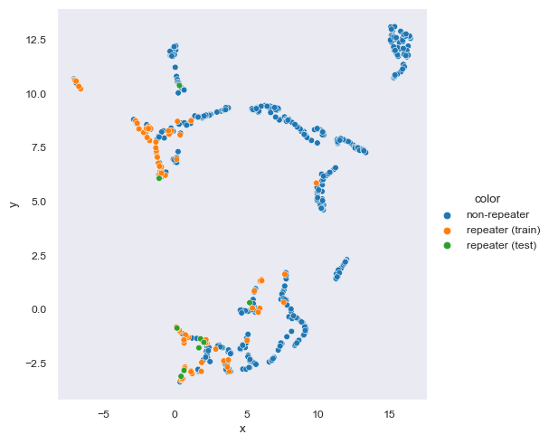
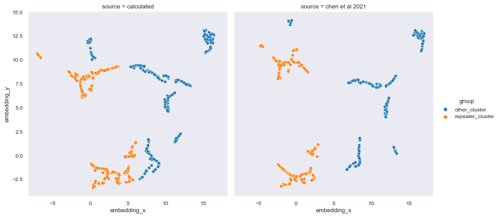

import umap
import pandas as pd
import seaborn as sns
from astropy.time import Time
from sklearn.model_selection import train_test_split
Note
üìå Goal: This notebook tries to reproduce the results from https://ui.adsabs.harvard.edu/abs/2022MNRAS.509.1227C/abstract. As stated in the paper, verbatim
Our goal is to map several observational and model-dependent parameters of each FRB to a 2D embedding plane by training the UMAP algorithm on the features of the training samples in CHIME/FRB dataset and finally identify possibly misclassified non-repeating FRBs which in fact have latent features of repeating FRBs. We define these possibly misclassified non-repeating FRBs as FRB repeater candidates in our paper.
0. Getting the Data
0.1 Source
The paper uses data from CHIME/FRB Catalog with parameters calculated in Hashimoto et. al. 2022.
catalog: pd.DataFrame = pd.read_csv('../data/raw/chimefrbcat1_Hashimoto_2022.csv')
catalog| tns_name | previous_name | repeater_name | ra | ra_err | ra_notes | dec | dec_err | dec_notes | gl | ... | weight_fluence_error_m | weight | weight_error_p | weight_error_m | weighted_logrhoA | weighted_logrhoA_error_p | weighted_logrhoA_error_m | weighted_logrhoB | weighted_logrhoB_error_p | weighted_logrhoB_error_m | |
|---|---|---|---|---|---|---|---|---|---|---|---|---|---|---|---|---|---|---|---|---|---|
| 0 | FRB20180725A | 180725.J0613+67 | -9999 | 93.42 | 0.04 | -9999 | 67.10 | 0.20 | -9999 | 147.29 | ... | NaN | NaN | NaN | NaN | NaN | NaN | NaN | NaN | NaN | NaN |
| 1 | FRB20180727A | 180727.J1311+26 | -9999 | 197.70 | 0.10 | -9999 | 26.40 | 0.30 | -9999 | 24.76 | ... | NaN | NaN | NaN | NaN | NaN | NaN | NaN | NaN | NaN | NaN |
| 2 | FRB20180729A | 180729.J1316+55 | -9999 | 199.40 | 0.10 | -9999 | 55.58 | 0.08 | -9999 | 115.26 | ... | NaN | NaN | NaN | NaN | NaN | NaN | NaN | NaN | NaN | NaN |
| 3 | FRB20180729B | 180729.J0558+56 | -9999 | 89.90 | 0.30 | -9999 | 56.50 | 0.20 | -9999 | 156.90 | ... | NaN | NaN | NaN | NaN | NaN | NaN | NaN | NaN | NaN | NaN |
| 4 | FRB20180730A | 180730.J0353+87 | -9999 | 57.39 | 0.03 | -9999 | 87.20 | 0.20 | -9999 | 125.11 | ... | NaN | NaN | NaN | NaN | NaN | NaN | NaN | NaN | NaN | NaN |
| ... | ... | ... | ... | ... | ... | ... | ... | ... | ... | ... | ... | ... | ... | ... | ... | ... | ... | ... | ... | ... | ... |
| 594 | FRB20190701A | -9999 | -9999 | 277.50 | 0.20 | -9999 | 59.00 | 0.20 | -9999 | 88.29 | ... | NaN | NaN | NaN | NaN | NaN | NaN | NaN | NaN | NaN | NaN |
| 595 | FRB20190701B | -9999 | -9999 | 302.90 | 0.20 | -9999 | 80.20 | 0.20 | -9999 | 112.88 | ... | NaN | NaN | NaN | NaN | NaN | NaN | NaN | NaN | NaN | NaN |
| 596 | FRB20190701C | -9999 | -9999 | 96.40 | 0.20 | -9999 | 81.60 | 0.30 | -9999 | 132.18 | ... | NaN | NaN | NaN | NaN | NaN | NaN | NaN | NaN | NaN | NaN |
| 597 | FRB20190701D | -9999 | -9999 | 112.10 | 0.20 | -9999 | 66.70 | 0.20 | -9999 | 149.28 | ... | 0.000649 | 1.361506 | 0.574701 | 0.206776 | 0.813142 | 0.485293 | 0.109293 | 0.894742 | 0.25519 | 0.19035 |
| 598 | FRB20190701E | -9999 | -9999 | 138.60 | 0.20 | -9999 | 61.71 | 0.04 | -9999 | 153.27 | ... | NaN | NaN | NaN | NaN | NaN | NaN | NaN | NaN | NaN | NaN |
599 rows × 107 columns
0.2 Dataset Validation
We first validate that the data is as described in the paper. According to the paper:
The initial dataset includes 501 non-repeating FRB sub-bursts from 474 sources and 93 repeating FRB sub-bursts from 18 sources.
The catalogue includes 535 FRBs at a frequency range between 400 and 800 MHz from 2018 July 25 to 2019 July 1. Since a repeating FRB source provides several FRBs and each FRB might include several sub-bursts, the actual number of applying subburst samples are 501 non-repeating + 93 repeating = 594 sub-bursts.
We can verify this using a simple dataframe method.
start: float = Time('2018-07-25').mjd
end: float = Time('2019-07-01').mjd
interval: pd.Series = (start <= catalog['mjd_400']) & (catalog['mjd_400'] <= end)
catalog: pd.DataFrame = catalog[interval]
repeating: pd.DataFrame = catalog[(catalog['repeater_name'] != "-9999")]
non_repeating: pd.DataFrame = catalog[(catalog['repeater_name'] == "-9999")]
print(f"Total repeaters\t\t: {len(repeating)}",f"Total non-repeaters\t: {len(non_repeating)}", sep="\n")
print(f"Total sub-bursts\t: {len(repeating) + len(non_repeating)}")Total repeaters : 93
Total non-repeaters : 501
Total sub-bursts : 594
Note
TODO Apply filter to get the number of sources. This filter only gets the number of sub bursts.
1. Preprocessing
1.1 Sample dan Selection
These are the criteria:
- Observed between 2018 July 25 to 2019 July 1. (Already filtered in Validation)
- We exclude the FRB sub-bursts which have neither
fluxnorfluencemeasurements. - The input data for unsupervised learning includes a total of 10 observational and 3 model-dependent parameters. (Described in Parameters)
1.2 Parameters
1.2.1 Observational Parameters
The parameters selected by the paper is as follows: - Boxcar Width bc_width - Width of Sub-Burst width_fitb - Flux flux - Fluence fluence - Scattering Time scat_time - Spectral Index sp_idx - Spectral Running sp_run - Highest Frequency high_freq - Lowest Frequency low_freq - Peak Frequency peak_freq
1.2.2 Model Dependent Parameters
- Redshift
z - Radio Energy
logE_rest_400 - Rest-Frame Intrinsic Duration
logsubw_int_rest
from typing import List
params : List[str] = [
# Observational
"bc_width",
"width_fitb",
"flux",
"fluence",
"scat_time",
"sp_idx",
"sp_run",
"high_freq",
"low_freq",
"peak_freq",
# Model dependent
"z",
"logE_rest_400",
"logsubw_int_rest"
]
identifiers: List[str] = [
"tns_name",
"repeater_name"
]
dropna_subset = ['flux', 'fluence', 'logE_rest_400']
non_repeating = non_repeating[[*params, *identifiers]]
repeating = repeating[[*params, *identifiers]]2. Dimension Reduction
2.1 Split test and training data
test, train = train_test_split(repeating, test_size=0.9)# to be trained
selected = pd.concat([train, non_repeating]).dropna(subset=dropna_subset)2.2 UMAP
Parameters:
n_neighbors = 8- it controls how UMAP balances between the local structure and the global structure of the data manifolds
n_components = 2- the resulting dimensionality of the reduced dimension
min_dist = 0.1- to prevent the resulting low dimensional projections clumping together
model: umap.UMAP = umap.UMAP(n_neighbors=8, n_components=2, min_dist=0.1)
map = model.fit(selected[params])
test_map = map.transform(test[params])selected['x'] = map.embedding_[:, 0]
selected['y'] = map.embedding_[:, 1]
selected['color'] = ['non-repeater' if name == '-9999' else 'repeater (train)' for name in selected['repeater_name']]
selected = selected.sort_values(by=['color'])
test['x'] = test_map[:,0]
test['y'] = test_map[:,1]
test['color'] = 'repeater (test)'
to_plot = pd.concat([selected, test])
sns.set_style('dark')
sns.set_context('paper')
sns.relplot(data=to_plot, kind='scatter', x='x', y='y', hue='color', hue_order=['non-repeater','repeater (train)','repeater (test)'])<seaborn.axisgrid.FacetGrid at 0x1dff54e50d0>
3. HDBSCAN
We now perform HDBSCAN to cluster data based on the dimensionally reduced data from UMAP.
3.1 Calculation
import hdbscanconst = 0.485
clus_size = round(const * to_plot.shape[1])
model_ = hdbscan.HDBSCAN(clus_size)
to_plot['hdbscan'] = model_.fit_predict(to_plot[['x', 'y']])
to_plot = to_plot.sort_values(by='hdbscan', ascending=True)
to_plot['hdbscan'] = to_plot['hdbscan'].astype(str)
sns.relplot(data=to_plot, kind='scatter', x='x', y='y', hue='hdbscan')<seaborn.axisgrid.FacetGrid at 0x1df8adc3340>3.2 Comparison
In this section we present the data from Chen et al (2021).
chen2021 = pd.read_csv('../data/raw/CHIME_FRB_ML_classification.csv')
chen2021['source'] = 'chen et al 2021'
sns.relplot(data=chen2021, kind='scatter', x='embedding_x', y='embedding_y', hue='group')<seaborn.axisgrid.FacetGrid at 0x1df8b491fa0>As you can see, Chen et al (2021) contains 9 clusters while the one we did have 12 clusters. The number of clusters itself is irrelevant but the size of clusters is. What we want to know is whether or not we can replicate the classification of repeater clusters from non-repeater clusters.
A cluster is considered repeater cluster is the total number of more than 10% repeating FRB exists in the cluster. Other FRBs inside the repeater cluster is determined to be ‘potentially’ repeating. Then, we compare the division between this notebook and Chen et al (2021).
# Determining repeater clusters (>10% is repeater FRB)
this = to_plot[['tns_name','x','y', 'hdbscan', 'color']].rename(columns={'x': 'embedding_x', 'y':'embedding_y', 'hdbscan': 'label', 'color': 'repeater'})
this['source'] = 'calculated'
this['repeater'] = [False if name == 'non-repeater' else True for name in this['repeater']]
a = this.groupby('label').aggregate('mean', numeric_only=True)
a['group'] = ['repeater_cluster' if row > 0.1 else 'other_cluster' for row in a['repeater']]
a.reset_index()
this = this.merge(a[['group']], on='label')
# Rename groups to only separate repeater clusters from other clusters
chen2021['group'] = chen2021['group'].apply(lambda x: x[:-2])
data: pd.DataFrame = pd.concat([this, chen2021])
sns.relplot(data=data, kind='scatter', x='embedding_x', y='embedding_y', hue='group', col='source')<seaborn.axisgrid.FacetGrid at 0x1df8b23fa60>
The division fairly replicates the one from Chen et al. (2021). However, some of the top left corner of the embedding is not classified as repeater in this notebook while it is in Chen et al. (2021). We can continue analysis with more graphs from Chen et al. (2021).